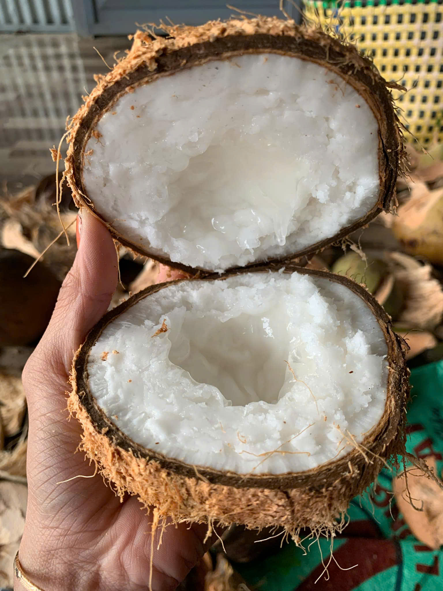
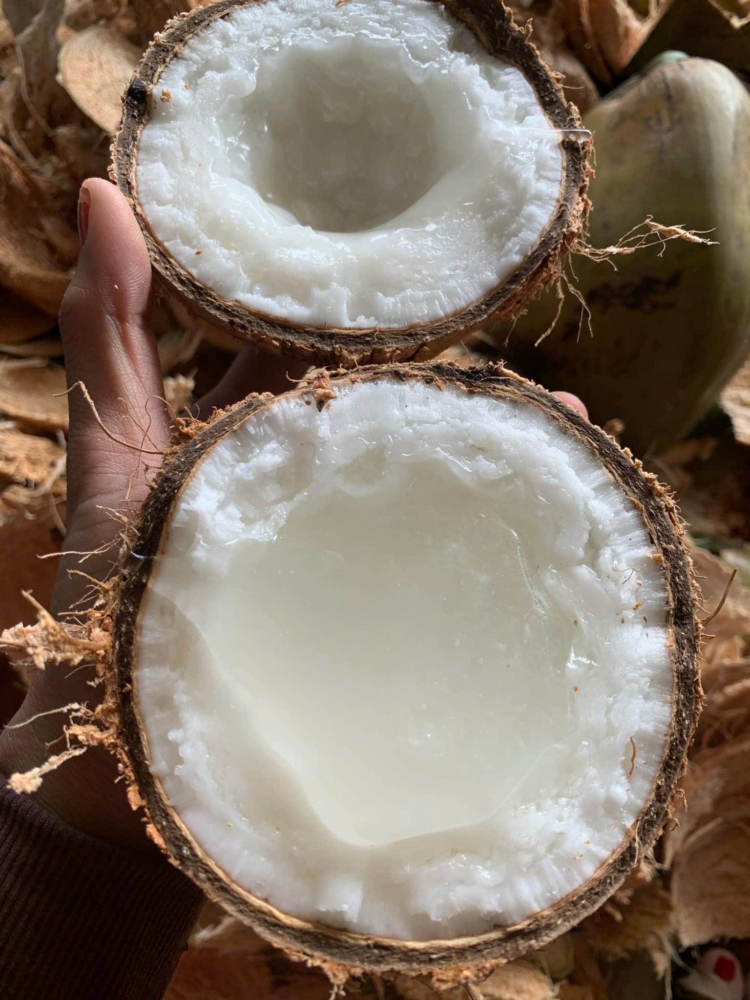

Giá Dừa Sáp Trà Vinh Cầu Kè Loại 1 Hôm Nay (2026) Bao Nhiêu 1 Trái?
✍️ Thực hiện bởi: Nghệ nhân Vựa Dừa Sáp Cầu Kè (Xã Hòa Tân, Cầu Kè, Trà Vinh) • Cập nhật mới nhất: Tháng 11/2026
Khi tìm mua đặc sản dừa sáp Trà Vinh trên mạng xã hội hoặc các sàn thương mại điện tử, chắc hẳn nhiều anh chị không khỏi hoang mang: có nơi rao bán "dừa sáp xả vườn" chỉ 45.000đ – 65.000đ/trái, nhưng tại các nhà vườn uy tín ở Cầu Kè hay cửa hàng đặc sản lớn, mức giá lại dao động từ 99.000đ đến hơn 200.000đ/trái. Vậy thực chất giá dừa sáp Trà Vinh loại 1 chuẩn đặc ruột hôm nay là bao nhiêu và làm sao để không mất tiền oan mua nhầm dừa điếc, dừa dạt?
- Bảng giá Dừa Sáp Cầu Kè Loại 1 niêm yết tại vườn (Cập nhật 2026)
- Giải mã: Tại sao dừa sáp Cầu Kè thật lại có giá cao gấp 8-10 lần dừa thường?
- So sánh giá Dừa Sáp Truyền Thống (Tự nhiên) và Dừa Sáp Cấy Phôi
- Sự thật đằng sau những lời rao "Dừa sáp 40k - 60k/trái" trên mạng
- Chính sách Bao Sáp 1 Đổi 1 & Mua sỉ/lẻ tại Vựa Cầu Kè Trà Vinh

1. Bảng Giá Dừa Sáp Cầu Kè Loại 1 Niêm Yết Tại Vườn (2026)
Tại Vựa Dừa Sáp Cầu Kè Trà Vinh (Hotline/Zalo: 086 678 6076), toàn bộ dừa xuất vườn đều là hàng tuyển chọn trực tiếp từ các hộ nông dân lâu năm tại xã Hòa Tân, Hòa Ân, An Phú Tân (huyện Cầu Kè). Giá dừa sáp được định giá minh bạch dựa trên trọng lượng thực tế của trái (sau khi đã gọt bớt lớp vỏ xơ thô bên ngoài) và độ tuổi sáp đặc kẹo bên trong:
👉 (Trên điện thoại, bạn có thể vuốt ngang bảng giá bên dưới để xem chi tiết)
| Phân Loại Dừa Sáp Loại 1 | Trọng Lượng Chuẩn | Độ Dày Cơm & Nước | Giá Tại Vườn | Ưu Đãi Đi Kèm |
|---|---|---|---|---|
| Dừa Sáp Đặc - Size Nhỏ (Size Ăn Thử / Gia đình nhỏ) |
800g – 1.0kg / trái | Cơm dày 75%, dẻo mềm, nước sệt ngọt thanh (Làm được 2-3 ly) | 99.000đ |
Mua từ 2 trái: Freeship Toàn Quốc + Bao sáp 1 đổi 1 |
| Dừa Sáp Đặc - Size Vừa (🔥 Bán chạy số 1 - 80% khách chọn) |
1.0kg – 1.3kg / trái | Độ sáp chuẩn nhất (80% gáo), cơm dẻo quánh, nước kẹo kéo sợi (4-5 ly) | 139.000đ |
Combo 2 trái (278k): Freeship Toàn Quốc + Bao sáp 1 đổi 1 |
| Dừa Sáp VIP - Size Lớn (Hàng tuyển biếu tặng đối tác) |
1.3kg – 1.5kg / trái | Trái to đại, cơm siêu dày đặc ruột kịch trần, nước kẹo sánh như mật (6-7 ly) | 169.000đ |
Combo 2 trái (338k): Freeship + Tặng Sữa đặc & Đậu phộng |
2. Giải Mã: Tại Sao Dừa Sáp Cầu Kè Thật Lại Đắt Gấp 8 - 10 Lần Dừa Thường?
Rất nhiều khách hàng lần đầu tìm hiểu thường thắc mắc: "Cũng là trái dừa thôi mà sao dừa tươi uống nước có 15.000đ/trái, còn dừa sáp Cầu Kè lại tới hơn trăm ngàn?". Câu trả lời nằm ở 3 quy luật tự nhiên cực kỳ khắt khe của giống dừa quý hiếm này:
- Thứ nhất – Tỷ lệ kết sáp tự nhiên cực thấp (Chỉ 20% – 30%): Dù được trồng từ chính cây dừa sáp bố mẹ tại vùng đất Cầu Kè, nhưng do đặc tính gen lặn và quá trình thụ phấn chéo trong tự nhiên, một buồng dừa 10 trái khi thu hoạch chỉ có đúng 2 đến 3 trái thật sự kết sáp. 7 – 8 trái còn lại trên cùng buồng đó vẫn là dừa nước bình thường (thợ vườn gọi là "dừa lạc").
- Thứ hai – Kén đất và kén khí hậu: Giống dừa sáp khi mang đi các tỉnh khác trồng thường bị thoái hóa, cơm mỏng và mất đi độ béo kẹo đặc trưng. Chỉ có thổ nhưỡng đất pha cát bồi tụ phù sa sông Hậu cùng nguồn nước lợ nhẹ đặc thù tại huyện Cầu Kè, tỉnh Trà Vinh mới nuôi dưỡng được lớp cơm sáp dày bông xốp như kem.
- Thứ ba – Thời gian chờ đợi kéo dài 11 – 12 tháng: Trong khi dừa uống nước chỉ mất 6 – 7 tháng là thu hoạch, trái dừa sáp phải nằm trên cây gần 1 năm trời để phần nước dừa cô đặc dần và nuôi lớp cơm phình to chiếm kín lòng gáo.

3. So Sánh Dừa Sáp Truyền Thống (Tự Nhiên) & Dừa Sáp Cấy Phôi
Hiện nay tại Trà Vinh có 2 dòng dừa sáp chính. Việc hiểu rõ sự khác biệt sẽ giúp anh chị chọn mua đúng sở thích và túi tiền:
- Dừa sáp truyền thống (Thụ phấn tự nhiên): Tỷ lệ cho sáp trên quày chỉ khoảng 25% – 30%. Ưu điểm tuyệt đối là hương vị thơm lừng tự nhiên, hậu vị ngọt thanh, lớp cơm vừa dẻo vừa bùi và lớp nước kẹo kéo sợi rất đậm đà. Giá thu mua tại vườn dao động từ 95.000đ – 170.000đ tùy kích cỡ.
- Dừa sáp cấy phôi (Công nghệ nuôi cấy phôi trong ống nghiệm): Cây giống đắt đỏ nhưng tỷ lệ trái có sáp đạt tới 75% – 85%. Cơm dừa rất dày và trắng, tuy nhiên nhiều thực khách sành ăn đánh giá độ thơm nồng tự nhiên của nước kẹo thường đạt khoảng 9/10 so với giống dừa lão truyền thống lâu năm tại xã Hòa Tân.
4. Sự Thật Đằng Sau Lời Rao "Dừa Sáp Giá Rẻ 40k - 60k" Trên Mạng
Ngay tại thủ phủ Cầu Kè Trà Vinh, giá nhà vườn đổ sỉ cho thương lái cắt tại gốc đối với trái dừa sáp bi nhỏ nhất cũng đã từ 50.000đ – 60.000đ/trái, trái vừa và lớn từ 70.000đ – 110.000đ/trái (chưa tính công gọt, túi lưới, thùng đóng gói và phí bưu điện 30.000đ). Do đó, những nơi chạy quảng cáo bán dừa sáp giá 40.000đ – 60.000đ bao ship toàn quốc thực chất là:
- Trộn "dừa lạc" (dừa không sáp trên cùng buồng): Nhìn bên ngoài vỏ y hệt nhau, khách nhận hàng trả tiền xong bổ ra mới biết là dừa khô bình thường, nhắn tin thì bị chặn số.
- Hàng dạt sáp mỏng / dừa non bị rụng: Bên trong chỉ có một lớp váng mỏng dính như dừa cứng cạy, nước lỏng bỏng và chua gắt.
- Dừa gọt trọc vỏ xơ tồn kho lâu ngày: Để giảm cân nặng tiền ship, họ gọt trụi lủi lớp xơ bảo vệ khiến gáo dừa đi đường xa bị nứt ngầm, vi khuẩn xâm nhập làm cơm dừa bị nhớt và hôi dầu.
5. Chính Sách Bảo Hành "Bao Sáp 1 Đổi 1" Uy Tín Tại Vựa Cầu Kè
Với hơn 15 năm gắn bó cùng nghề tuyển dừa sáp tại Cầu Kè, chúng tôi hiểu rằng khách hàng bỏ tiền mua một thức quà đặc sản luôn mong muốn nhận được trọn vẹn niềm vui khi bổ trái dừa ra. Vì vậy, 100% đơn hàng đặt tại website duasaptravinh.netlify.app đều được cam kết:
- ✅ Bao Sáp 1 Đổi 1 Từng Trái: Nếu bổ ra gặp trái bị điếc (không sáp), sáp mỏng lỏng nước hoặc bị chua do vận chuyển, anh chị chỉ cần chụp 1 tấm ảnh gửi qua Zalo 086 678 6076 — Vựa lập tức gửi bù trái mới miễn phí hoặc hoàn tiền 100% trong vòng 5 phút!
- ✅ Giữ lớp áo xơ bảo vệ & bọc lưới vàng: Đảm bảo dừa vận chuyển đi Hà Nội, Hải Phòng, Đà Nẵng hay TP.HCM suốt 7 – 10 ngày vẫn tươi rói như vừa hái.
- ✅ Kiểm tra hàng trước khi thanh toán (COD): Khách nhận hàng được mở thùng kiểm tra đúng số lượng, đúng kích cỡ trái lành lặn mới thanh toán.